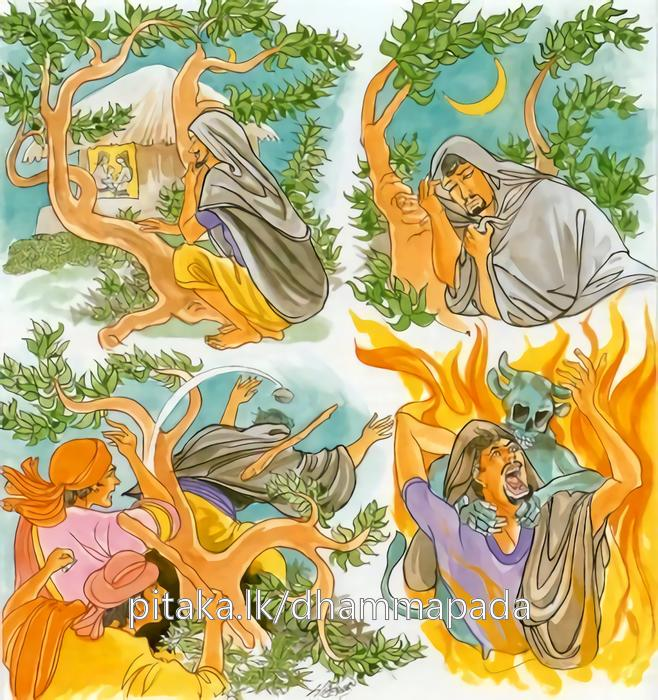
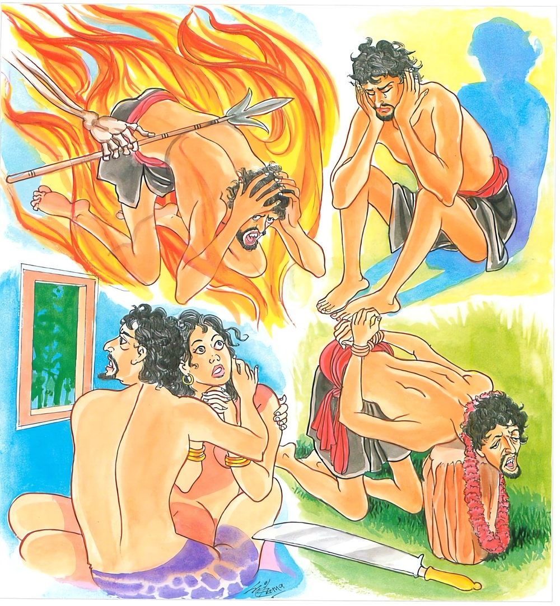

22-4 බේම උපාසක පිළිබඳ කථා පුවත
මෙම කතාව සද්ධර්ම සාගරයෙන් ද කියවන්න.
චත්තාරි ඨානානි නරො පමත්තො
ආපජ්ජති පරදාරූපසෙවී.
අපුඤ්ඤලාභං න නිකාමසෙය්යං
නින්දං තතියං නිරයං චතුත්ථං.
පරඹුන් සෙව්නා සුලු, පමා වූ පුරුෂ තෙම පළමු වන අකුසල ප්රතිලාභය ද, දෙවෙනි වූ නිකාමශ්යාව (කැමැති සේ වැදෑ හීම) නො ලැබීම ද, (හෙවත් මඳ නිදි ඇති බව ද), තෙවෙනි වූ මෙ ලොව ලබන නින්දාව ද, සතර වනු නිරයෙහි ඉපැද්ම ද යන දුක් කරුණු සතරට පැමිණෙයි.

අපුඤ්ඤලාභො ච ගතී ච පාපිකා
භීතස්ස භීතාය රතී ච ථොකිකා
රාජා ච දණ්ඩං ගරුකං පණෙති
තස්මා නරො පරදාරං න සෙවෙ.
ඔහුට අකුශලප්රතිලාභය ද, එයින් වන (නරකෝප්පත්තිසංඛ්යාත) ලාමක විපාක ගතිය ද වේ. බියපත්හුගේ බියපත් ස්ත්රිය හා සංසර්ගයෙන් උපදනා කාමරතිය ද ස්වල්ප වේ. රජ ද ගරු වූ දඬුවම් පණවයි. එහෙයින් පුරුෂ තෙම පරඹුවන් නො සෙව්නේ ය.

"වත්තාරි ඨානානි යන” මේ ධර්ම දේශනය ශාස්තෲන් වහන්සේ සැවැත් නුවර ජේතවනාරාමයේ වැඩ සිටියදී අනේපිඬු සිටුගේ බෑනාවු ඛේම නම් සිටුපුත්රයා නිමිති කරගෙන දේශනා කළහ.
ඔහු මනාරූප ඇත්තේය. බොහෝ ස්ත්රීහු ඔහු දැක රාගයෙන් යුතු වුයේ තමන්ගේ ස්වභාවයෙන් සිටීමට නොහැකිවුහ. ඔහුද පරදාර කර්මයෙහි කැමැත්තේ විය. අනතුරුව ඔහු රාත්රියේ රාජ පුරුෂයන් විසින් අල්ලා ගන්නාලදුව රජුට දැක්වුහ. රජ මහා සිටුවරයාට ලජ්ජා වෙතියි ඔහුට කිසිවක් නොකියා මුදවා යැවීය. හෙතෙමේ ද එ වරදින් නොවැලකුනේය. අනතුරුව දෙවනුවද තෙවනුවද රාජ පුරුෂයන් ගෙන රජුට දැක්වුහ. රජු නිදහස් කළේය මහ සිටුවරයා මේ පුවත දැන ඔහු රැගෙන බුදුන් වෙත ගොස් ඒ පුවත දැනුම් දී ස්වාමීනි මොහුට ධර්ම දේශනා කරන්නැයි පැවසුවේය. බුදුහු ඔහුට සංවේගය ඇති වන සේ කතා කොට පරදාර සේවනයේ දොස් දක්වමින් මේ ගාථාව පැවසුහ.
පර අඹුවන් සෙවුම - බලවත් පාපයකි ලොව
නිදි නොලැබ දුක් වී - අකුසල් උපදවයි ඉන්
නිරයෙහි වැටීමද - බියට පැමිණිමද
දඬුවම් ලැබීමද - සිදු වේ. එයින් නොමදව,
පරඹුවන් සේවනය කරන ප්රමාද වු මිනිසා අකුසල් ලබයි. කැමති සේ නිදි නොලබයි. තුන්වැනිව නින්ද ලබයි. ගතරචෙතිව නරකයේ උපදියි. මේ දුක්ඛිත කරුණු සතර පැමිනේ.
අකුශල් ලැබීමද ලාමක ගතියද ඔහුට වෙයි. බියට පත් වුවහු බියටපත් ස්ත්රියක් සමග යෙදෙන කාමරතියද ස්වල්ප වන්නේය. රජුද බර දඩුවම් දෙයි. එනිසා පුරුෂයා පරදාර සේවනය නොකළ යුතුයි.
එහි ඨානාති - දුකට කරුණුයි පමත්තෙතාති - සිහි මුර්ජාවෙන් යුතුවුයේ වෙයි ආපජ්ජතිති - දුක්වලට පැමින්නේ, පරදාරු පසෙවී පර අඹුවන් සේවනය කිරීමෙන් අපුඤ්ඤලාභං - අකුසල් ලබයි. එසේ අකුසල් ලැබීමෙන් නරකාදියෙහි උපදින්නට සිදුවේ. යම් සේ නින්දක් නොලැබ එලෙස නින්දක් නොලැබ, අකමැත්තෙන් ස්වල්ප කාලයක් නින්ද ලබයි. අපුඤ්ඤලාභෝ මෙසේ මොහුට අකුසල් නිසා පාපී ස්වභාවය ඇති වේ. රතීච ථොකිතාති - බියවු තැනැත්තාට බියවු ස්ත්රියක් සමග යෙදෙන රතියද ස්වල්පය සීමිතය. ගරුකං රජවරු ද අත් පා කැපීම් ආදී වශයෙන් ගරු දඩුවම් පනවයි. එනිසා යමෙක් පරදාර සේවනය කරන්නේ මේ අකුශලයට පත්වේ. එනිසා පරදාර සේවනය නොකළ යුතුය. යන අර්ථයි.
දෙසුම අවසානයේ ඛේම උපාසක තෙමේ සෝවාන් ඵලයට පත්විය. එතැන් පටන් මහජනයා සුවසේ කල්යැවීය. ඔහුගේ පුර්ව කර්මය කුමක්ද? ඔහු කාශ්යප බුද්ධ කාලයේ දී උතුම් මල්ලවයෙක්ව ඉපිද රන් පටසළු දෙකක් තථාගතයන් වහන්සේගේ රන් ථුපයකට නංවා ප්රාර්ථනයක් තැබීය. තමා සහලේ ඥාති ස්ත්රීන් හැර අනෙක් ස්ත්රීන් මා දැක මට ඇලේවා යනු වෙන් ප්රාර්ථනා කළේය. මෙය ඔවුන්ගේ පුර්ව කර්මයයි. මේ නිසා ඔහු උපනුපන් ස්ථානයන්හි අන් අයගේ ස්ත්රීන්ට තමන්ගේ තැන සිටීමට නොහැකි වුහ.